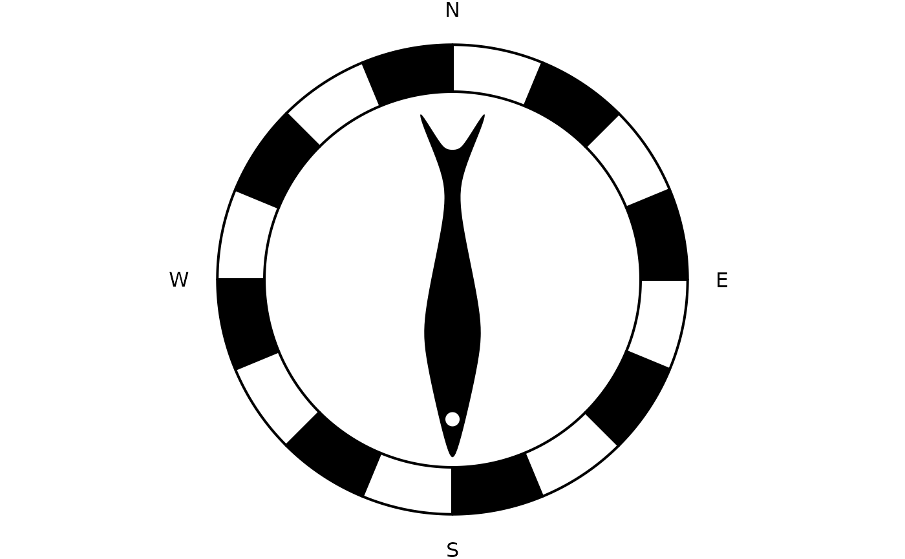

Classic North Arrow Style (Minimal)
Source:R/annotation_compass.R, R/compass_styles.R
compass-styles.RdA collection of style constructors that return `grid` grobs for use with `annotation_compass(style = ...)`. These styles provide different visual appearances for a compass or north arrow drawn as an annotation.
Usage
north_arrow_classic(
fill = c("white", "black"),
line_col = "black",
line_width = 2,
text_col = "black",
text_size = 12,
text_face = "plain",
text_family = ""
)
compass_sinan(
line_col = "black",
square_pad = 0.1,
ring_outer = 0.35,
ring_ratio = 0.65,
labels = c("N", "E", "S", "W"),
text_size = 12,
text_face = "plain",
text_family = "",
text_col = "black",
label_offset = 0.05,
spoon_fill = "black",
spoon_col = "black",
spoon_scale = 0.8,
inner_fill = "lightgrey",
square_width = 2,
outer_width = 2,
inner_width = 1,
spoon_width = 1
)
north_arrow_classic(
fill = c("white", "black"),
line_col = "black",
line_width = 2,
text_col = "black",
text_size = 12,
text_face = "plain",
text_family = ""
)
north_arrow_solid(
fill = "black",
line_col = "black",
line_width = 1,
text_col = "black",
text_size = 12,
text_face = "plain",
text_family = ""
)
compass_rose_simple(
fill = c("white", "black"),
line_col = "black",
line_width = 1,
sharpness = 0.7,
text_col = "black",
text_size = 12,
text_face = "plain",
text_family = ""
)
compass_rose_classic(
fill = c("white", "black"),
line_col = "black",
line_width = 1.5,
sharpness = 0.6,
text_col = "black",
text_size = 12,
text_face = "plain",
text_family = ""
)
compass_rose_circle(
fill = "white",
line_col = "black",
line_width = 3,
text_col = "black",
text_size = 12,
text_face = "plain",
text_family = ""
)
compass_guiding_fish(
size = 1,
ring_ratio = 0.2,
ring_width = 2,
n_seg = 16,
fish_col = "black",
fish_shift = -0.03,
text_col = "black",
text_size = 12,
text_face = "plain",
text_family = ""
)
compass_sinan(
line_col = "black",
square_pad = 0.1,
ring_outer = 0.35,
ring_ratio = 0.65,
labels = c("N", "E", "S", "W"),
text_size = 12,
text_face = "plain",
text_family = "",
text_col = "black",
label_offset = 0.05,
spoon_fill = "black",
spoon_col = "black",
spoon_scale = 0.8,
inner_fill = "lightgrey",
square_width = 2,
outer_width = 2,
inner_width = 1,
spoon_width = 1
)Arguments
- fill
Fill color(s) for polygons. Vectorized for alternating fills in some styles.
- line_col
Stroke color for outlines.
- line_width
Stroke width for outlines (numeric).
- text_col
Text color for labels.
- text_size
Text font size for labels (points).
- text_face
Text font face (e.g., "plain", "bold").
- text_family
Text font family.
- square_pad
Padding around the outer square (Sinan style), fraction of box side.
- ring_outer
Outer ring radius (Sinan style), expressed in npc units (0..1).
- ring_ratio
Inner/outer radius ratio for ringed styles (0 < value < 1).
- labels
Character vector of cardinal labels, usually `c("N","E","S","W")`.
- label_offset
Label offset from the square edges (Sinan style), npc units.
- spoon_fill
Fill color for spoon glyph (Sinan style).
- spoon_col
Stroke color for spoon glyph (Sinan style).
- spoon_scale
Scale factor for spoon glyph (Sinan style).
- inner_fill
Fill color for inner disk (Sinan style).
- square_width, outer_width, inner_width, spoon_width
Stroke widths for respective elements in Sinan style.
- sharpness
Controls star-point sharpness in rose styles, numeric in [0, 1].
- size
Global size scaler (used by some styles).
- ring_width
Stroke width of ring outlines (numeric).
- n_seg
Number of ring segments (integer).
- fish_col
Fill color for fish shape (guiding fish style).
- fish_shift
Vertical shift for fish shape (guiding fish style).
Details
Exported constructors documented under this topic:
north_arrow_classic()north_arrow_solid()compass_rose_simple()compass_rose_classic()compass_rose_circle()compass_guiding_fish()compass_sinan()
Each constructor returns a grob ready to be passed to annotation_compass(style = ...).
All styles include an "N" (or cardinal labels) to indicate north.
Examples
# Standalone preview
grid::grid.newpage(); grid::grid.draw(north_arrow_classic())
grid::grid.newpage(); grid::grid.draw(north_arrow_solid())
grid::grid.newpage(); grid::grid.draw(compass_rose_simple())
grid::grid.newpage(); grid::grid.draw(compass_rose_classic())
grid::grid.newpage(); grid::grid.draw(compass_rose_circle())
grid::grid.newpage(); grid::grid.draw(compass_guiding_fish())

grid::grid.newpage(); grid::grid.draw(compass_sinan())
# Use in ggplot
# \donttest{
if (requireNamespace("ggplot2", quietly = TRUE) &&
requireNamespace("sf", quietly = TRUE)) {
nc <- sf::st_read(system.file("shape/nc.shp", package = "sf"), quiet = TRUE)
p <- ggplot2::ggplot() +
ggplot2::geom_sf(data = nc, fill = "grey90") +
ggplot2::theme_minimal()
p + annotation_compass(location = "tr", style = north_arrow_classic())
p + annotation_compass(location = "bl", style = compass_sinan())
}
# }